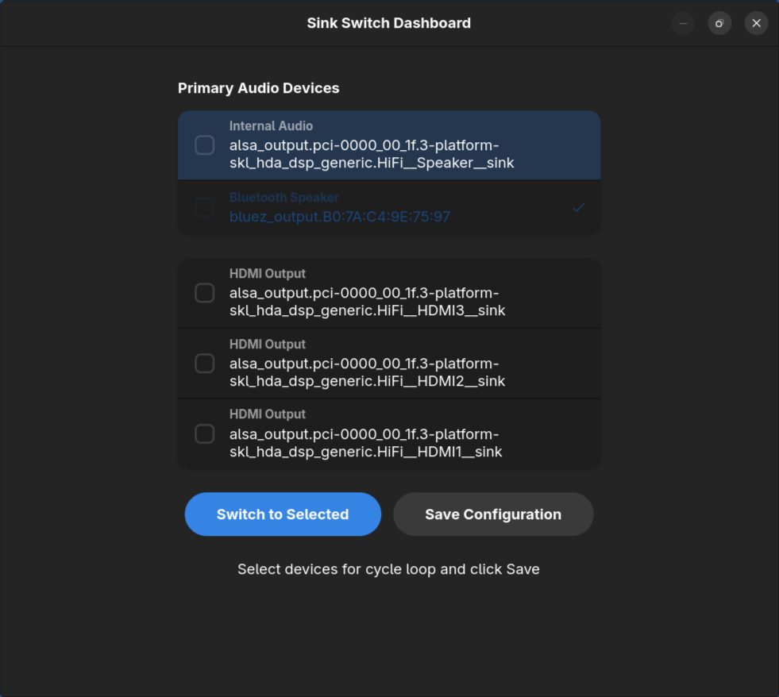
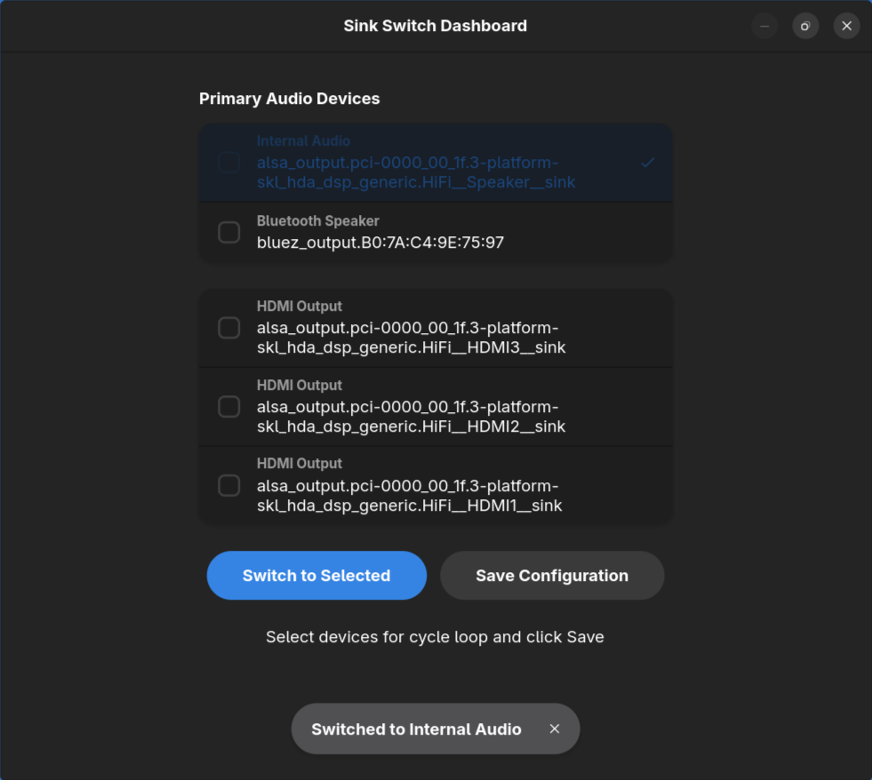

Using Dashboard
Sink Switch provides a modern visual dashboard on both Linux (GTK4/Libadwaita) and Windows to manage your audio devices.
Linux (GTK4)

Device Sections
On Linux, devices are automatically categorized into Primary Audio Devices (like internal speakers and Bluetooth) and HDMI & External Audio for easier navigation.
Switching Devices
Simply double-click on any device row or select it and click "Switch to Selected" to make it the default system output. Sink Switch moves all active audio streams automatically.
Cycle Configuration
Use the checkboxes on the left of each row to include or exclude devices from your hotkey toggle loop. Click "Save Configuration" to persist these changes.
Windows (Native)
The Windows version features a lightweight, native GUI built with Go, designed to feel right at home on Windows 10 and 11.

Configuration
Easily configure which devices are included in your switching cycle and set up your preferred hotkeys through the settings interface.

Notifications
Every time you switch devices, Sink Switch sends a native system notification with the device name and type, ensuring you always know where your audio is going.
